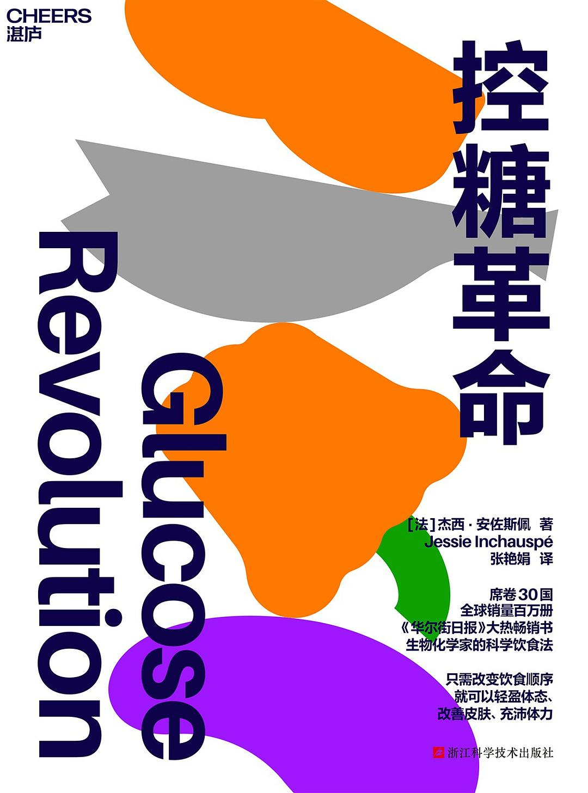

控糖革命
[法]杰西·安佐斯佩（Jessie Inchauspé） 著|张艳娟 译
前言 聆听来自身体的声音
引言 不要把健康视为理所当然
第一部分 为什么要控糖
1 进入驾驶舱 葡萄糖为什么如此重要
2 “食土动物” 植物如何生成葡萄糖
3 家庭事务 葡萄糖是如何进入血液的
4 寻求快乐 为什么我们比原来吃了更多的葡萄糖
5 皮肤之下 发现葡萄糖峰值
第二部分 出现葡萄糖峰值有哪些危害
6 火车、面包和俄罗斯方块 葡萄糖峰值出现时体内发生的三大变化
7 从头到脚 葡萄糖峰值是如何让我们生病的
第三部分 轻松控糖的10个小窍门
8 窍门1 正确的饮食顺序
9 窍门2 在每餐前增加一道绿色开胃菜
10 窍门3 停止计算热量
11 窍门4 平稳早餐后的血糖曲线
12 窍门5 吃自己喜欢的糖，因为所有糖都一样
13 窍门6 选择餐后甜点而不是甜甜的零食
14 窍门7 吃饭之前喝点儿醋
15 窍门8 饭后动起来
16 窍门9 如果一定要吃零食，就吃咸香美味的零食
17 窍门10 为你摄入的碳水化合物“穿上外衣”
附录A 如何做一个控糖女神
附录B 控糖女神的一天
后记 独一无二的你
前言 聆听来自身体的声音
引言 不要把健康视为理所当然
1 进入驾驶舱 葡萄糖为什么如此重要
2 “食土动物” 植物如何生成葡萄糖
3 家庭事务 葡萄糖是如何进入血液的
4 寻求快乐 为什么我们比原来吃了更多的葡萄糖
5 皮肤之下 发现葡萄糖峰值
6 火车、面包和俄罗斯方块 葡萄糖峰值出现时体内发生的三大变化
7 从头到脚 葡萄糖峰值是如何让我们生病的
8 窍门1 正确的饮食顺序
9 窍门2 在每餐前增加一道绿色开胃菜
10 窍门3 停止计算热量
11 窍门4 平稳早餐后的血糖曲线
12 窍门5 吃自己喜欢的糖，因为所有糖都一样
13 窍门6 选择餐后甜点而不是甜甜的零食
14 窍门7 吃饭之前喝点儿醋
15 窍门8 饭后动起来
16 窍门9 如果一定要吃零食，就吃咸香美味的零食
17 窍门10 为你摄入的碳水化合物“穿上外衣”
附录A 如何做一个控糖女神
附录B 控糖女神的一天
后记 独一无二的你